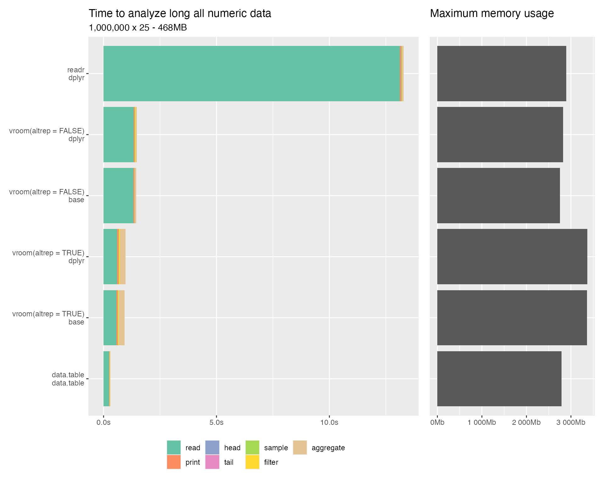
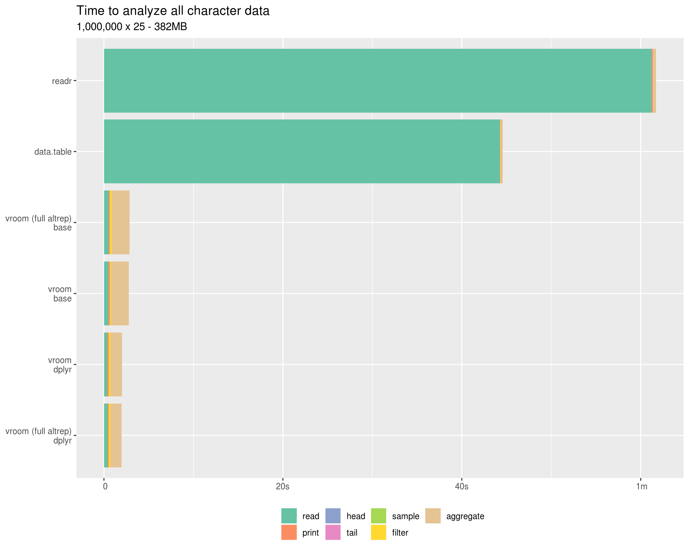
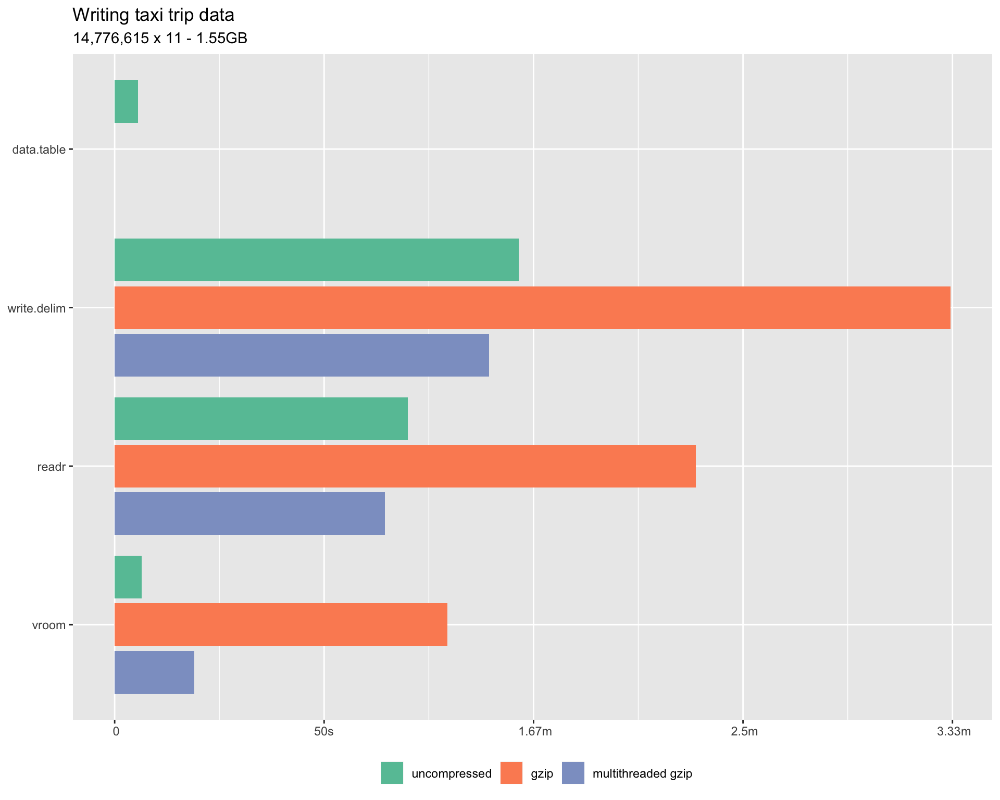

vroom is a new approach to reading delimited and fixed width data into R.
It stems from the observation that when parsing files reading data from disk and finding the delimiters is generally not the main bottle neck. Instead (re)-allocating memory and parsing the values into R data types (particularly for characters) takes the bulk of the time.
Therefore you can obtain very rapid input by first performing a fast indexing step and then using the Altrep framework available in R versions 3.5+ to access the values in a lazy / delayed fashion.
The initial reading of the file simply records the locations of each individual record, the actual values are not read into R. Altrep vectors are created for each column in the data which hold a pointer to the index and the memory mapped file. When these vectors are indexed the value is read from the memory mapping.
This means initial reading is extremely fast, in the real world dataset below it is ~ 1/4 the time of the multi-threaded data.table::fread(). Sampling operations are likewise extremely fast, as only the data actually included in the sample is read. This means things like the tibble print method, calling head(), tail() x[sample(), ] etc. have very low overhead. Filtering also can be fast, only the columns included in the filter selection have to be fully read and only the data in the filtered rows needs to be read from the remaining columns. Grouped aggregations likewise only need to read the grouping variables and the variables aggregated.
Once a particular vector is fully materialized the speed for all subsequent operations should be identical to a normal R vector.
This approach potentially also allows you to work with data that is larger than memory. As long as you are careful to avoid materializing the entire dataset at once it can be efficiently queried and subset.
The following benchmarks all measure reading delimited files of various sizes and data types. Because vroom delays reading the benchmarks also do some manipulation of the data afterwards to try and provide a more realistic performance comparison.
Because the read.delim results are so much slower than the others they are excluded from the plots, but are retained in the tables.
This real world dataset is from Freedom of Information Law (FOIL) Taxi Trip Data from the NYC Taxi and Limousine Commission 2013, originally posted at http://chriswhong.com/open-data/foil_nyc_taxi/. It is also hosted on archive.org.
The first table trip_fare_1.csv was converted to tsv and saved as trip_fare_1.tsv, It is 1.55G in size.
#> Observations: 14,776,615
#> Variables: 11
#> $ medallion <chr> "89D227B655E5C82AECF13C3F540D4CF4", "0BD7C8F5B...
#> $ hack_license <chr> "BA96DE419E711691B9445D6A6307C170", "9FD8F69F0...
#> $ vendor_id <chr> "CMT", "CMT", "CMT", "CMT", "CMT", "CMT", "CMT...
#> $ pickup_datetime <chr> "2013-01-01 15:11:48", "2013-01-06 00:18:35", ...
#> $ payment_type <chr> "CSH", "CSH", "CSH", "CSH", "CSH", "CSH", "CSH...
#> $ fare_amount <dbl> 6.5, 6.0, 5.5, 5.0, 9.5, 9.5, 6.0, 34.0, 5.5, ...
#> $ surcharge <dbl> 0.0, 0.5, 1.0, 0.5, 0.5, 0.0, 0.0, 0.0, 1.0, 0...
#> $ mta_tax <dbl> 0.5, 0.5, 0.5, 0.5, 0.5, 0.5, 0.5, 0.5, 0.5, 0...
#> $ tip_amount <int> 0, 0, 0, 0, 0, 0, 0, 0, 0, 0, 0, 0, 0, 0, 0, 0...
#> $ tolls_amount <dbl> 0.0, 0.0, 0.0, 0.0, 0.0, 0.0, 0.0, 4.8, 0.0, 0...
#> $ total_amount <dbl> 7.0, 7.0, 7.0, 6.0, 10.5, 10.0, 6.5, 39.3, 7.0...The code used to run the taxi benchmarks is in bench/taxi-benchmark.R.
The benchmarks labeled vroom_base uses vroom with base functions for manipulation. vroom_dplyr uses vroom to read the file and dplyr functions to manipulate. data.table uses fread() to read the file and data.table functions to manipulate and readr uses readr to read the file and dplyr to manipulate. By default vroom only uses Altrep for character vectors, the benchmarks labeled vroom (full altrep) instead use Altrep vectors for all supported types.
The following operations are performed.
print() - N.B. read.delim uses print(head(x, 10)) because printing the whole dataset takes > 10 minutes
head()tail()| package | read | head | tail | sample | filter | aggregate | total | |
|---|---|---|---|---|---|---|---|---|
| read.delim | 1m 21.5s | 6ms | 1ms | 1ms | 1ms | 315ms | 764ms | 1m 22.6s |
| readr | 33.1s | 90ms | 1ms | 1ms | 2ms | 202ms | 825ms | 34.2s |
| data.table | 15.7s | 13ms | 1ms | 1ms | 1ms | 129ms | 394ms | 16.3s |
| vroom base | 3.6s | 93ms | 1ms | 1ms | 1ms | 1.4s | 7.3s | 12.4s |
| vroom (full altrep) base | 1.8s | 133ms | 1ms | 1ms | 1ms | 1.4s | 7.5s | 10.9s |
| vroom dplyr | 3.6s | 86ms | 1ms | 1ms | 2ms | 1.4s | 1.9s | 7s |
| vroom (full altrep) dplyr | 1.7s | 89ms | 1ms | 1ms | 1.7s | 1.3s | 1.9s | 6.7s |
(N.B. Rcpp used in the dplyr implementation fully materializes all the Altrep numeric vectors when using filter() or sample_n(), which is why the first of these cases have additional overhead when using full Altrep.).
The code used to run the all numeric benchmarks is in bench/all_numeric-benchmark.R.
All numeric data is really a worst case scenario for vroom. The index takes about as much memory as the parsed data. Also because parsing doubles can be done quickly in parallel and text representations of doubles are only ~25 characters at most there isn’t a great deal of savings for delayed parsing.
For these reasons (and because the data.table implementation is very fast) vroom is a bit slower than fread for pure numeric data.
However the vroom is multi-threaded and therefore is quicker than readr and read.delim.
| package | read | head | tail | sample | filter | aggregate | total | |
|---|---|---|---|---|---|---|---|---|
| read.delim | 1m 57.6s | 8ms | 1ms | 1ms | 2ms | 7s | 54ms | 2m 4.7s |
| readr | 5.2s | 103ms | 1ms | 1ms | 3ms | 12ms | 43ms | 5.4s |
| vroom base | 1.6s | 109ms | 1ms | 1ms | 3ms | 73ms | 67ms | 1.9s |
| vroom (full altrep) dplyr | 391ms | 105ms | 1ms | 1ms | 1.1s | 64ms | 41ms | 1.7s |
| vroom dplyr | 1.5s | 108ms | 1ms | 1ms | 4ms | 12ms | 37ms | 1.7s |
| vroom (full altrep) base | 504ms | 152ms | 1ms | 1ms | 2ms | 60ms | 220ms | 937ms |
| data.table | 467ms | 14ms | 1ms | 1ms | 3ms | 5ms | 54ms | 541ms |
The code used to run the all character benchmarks is in bench/all_character-benchmark.R.
All character data is a best case scenario for vroom, as none of the data needs to be read initially.
| package | read | head | tail | sample | filter | aggregate | total | |
|---|---|---|---|---|---|---|---|---|
| read.delim | 1m 38.6s | 9ms | 1ms | 1ms | 3ms | 21ms | 330ms | 1m 39s |
| readr | 58.6s | 111ms | 1ms | 1ms | 4ms | 14ms | 359ms | 59.1s |
| data.table | 38.5s | 17ms | 1ms | 1ms | 2ms | 16ms | 226ms | 38.8s |
| vroom (full altrep) base | 516ms | 148ms | 1ms | 1ms | 3ms | 159ms | 1.9s | 2.7s |
| vroom base | 493ms | 137ms | 1ms | 1ms | 3ms | 168ms | 1.9s | 2.7s |
| vroom dplyr | 391ms | 166ms | 1ms | 1ms | 4ms | 180ms | 1.2s | 1.9s |
| vroom (full altrep) dplyr | 381ms | 89ms | 1ms | 1ms | 4ms | 137ms | 1s | 1.6s |
The code used to run the taxi writing benchmarks is at bench/taxi_writing-benchmark.R.
The benchmarks write out the taxi trip dataset in three different ways.
gzfile() (readr and vroom do this automatically for files ending in .gz)
pipe() connection to pigz
Note the current CRAN version of data.table (1.12.2) does not support writing to compressed files
| package | uncompressed | gzip | multithreaded gzip |
|---|---|---|---|
| data.table | 4.3s | NA | NA |
| write.delim | 1m 31.6s | 3m 20.5s | 1m 29.1s |
| readr | 1m 6.8s | 2m 16.6s | 1m 4.7s |
| vroom | 7.4s | 1m 18.3s | 17.5s |
The development version of dplyr was used in the benchmarks, as contains a fix for a performance issue with Altrep objects.
| package | version | date | source |
|---|---|---|---|
| base | 3.5.3 | 2019-03-13 | local |
| data.table | 1.12.2 | 2019-04-07 | CRAN (R 3.5.2) |
| dplyr | 0.8.0.9012 | 2019-04-29 | local |
| readr | 1.3.1 | 2018-12-21 | CRAN (R 3.5.0) |
| vroom | 0.0.0.9000 | 2019-04-30 | local |